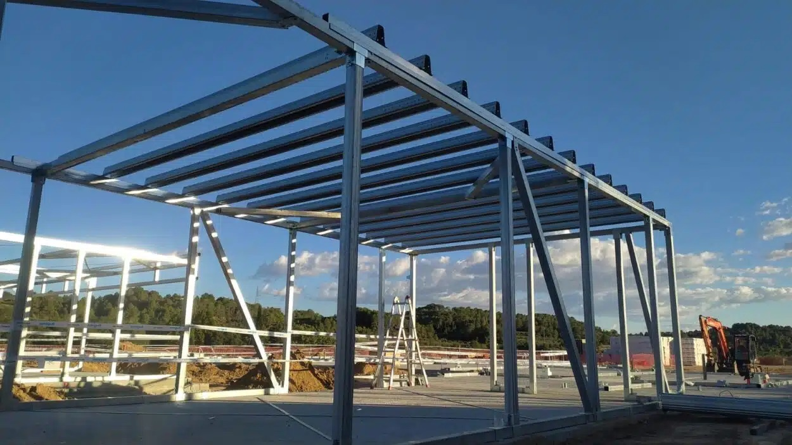

1 Estructuras. Pagina 4. 1.1 Estructuras naturales y artificiales. Pagina 5 2 Fuerzas y cargas. Pagina 7. 3 Esfuerzos. Pagina 8. 3.1 Tipos de esfuerzos. Paginas 8 y 9. 4.1 Estructuras masivas y adinteladas. Pagina 11 4.2 Estructuras abovedadas. Pagina 12. 4.3 Estructuras triangulares. Pagina 14. 4.4 Estructuras colgantes. Pagina 14. 4.5 Estructuras entramadas de hormigón armado. Pagina 15. 4.6 Estructuras laminales. Pagina 15. 5 Condiciones de las estructuras. Pagina 17. 5.1 ¿Como se consigue que una estructura sea estable, resistente y poco deformable. Pagina 18. 6.1 Pilar, columna y pilastra. Pagina 20. 6.2 Viga, vigueta y dindel. Pagina 20. 6.3 Arcos y bóvedas. Pagina 21. 6.4 Arbotantes y contrafuertes. Pagina 23. 6.7 Basamento, zapata, losa y pilote. Pagina 24 6.8 Tirantes y tensores. Pagina 24.
1 ¿Que son los mecanismos? Pagina 5 1.1 Elementos que intervienen en los mecanismos Pagina 6 2 Transmision lineal. Pagina 8 2.2 Poleas y polipastos. Pagina 9 POLIPASTOS. Pagina 11 3. Transmision de giro. Pagina 12 3.3 Tipos de poleas y engranajes Pagina 14 RELACION DE TRANSMISION. Pagina 15 4 Transformacion circular-lineal del movimiento alternativo Pagina 17 LEVA Y EXCENTRICA. Pagina 18 5 Mecanismos de control del movimiento Pagina 20 7 Acoplamientos y soportes Pagina 23 8 cojinetes y rodamientos Pagina 24

1. Análisis de objetos cotidianos. Pág 4. 2. Diseño de una solución. Pág 7. 3. La impresión 3D. Pág 10. Materiales de impresión. Pág 13. 4. Creación de objetos en 3D. Pág 14. 4.2 FreeCAD. Pág 16. 4.3 Configurar la impresión. Pág 17. 4.4 Impresión y acabados. Pág 18

Conceptos fundamentales de electricidad Pagina 4 1.1 Magnitudes eléctricas Pagina 5 2.1 Componentes eléctricos y electrónicos Pagina 7 2.1 Resistencia fija o resistor. Pagina 7 2.2 Resistencias variables o potenciómetros Pagina 8 2.5 Diodos Pagina 10 5. Robótica Pagina 11.
1. SISTEMAS DE COMUNICACIÓN PAG 4 2. TIPOS DE SEÑALES PAG 5 3. TRANSMISION POR CABLE PAG 7 3.1 CONMUTACION DE CIRCUITOS PAG 8 4. TRANSMISIONES INALAMBRICAS PAG 10 5 TELEGRAFO Y TELEFONO PAG 11 6 RADIO PAG 13 7 RADIO PAG 14 8 SATELITES Y SISTEMAS DE POSICIONAMIENTO PAG 16 8.2 TIPOS DE SATELITES SEGÚN SU FUNCION PAG 17 10 USO RESPONSABLE DE LOS MEDIOS DE COMUNICACIÓN PAG 19.

1. FUNCIONAMIENTO DE INTERNET PAG 5 1.1 TIPOS DE REDES PAG 6 1.3 EL PROTOCOLO TCP/IP PAG 8 2. SEGURIDAD DE INTERNET PAG 9 4.1 LOS LENGUAJES DE MARCADO PAG 11 4.2 NAVEGADOR WEB PAG 12 ESTRUCTURA DE UN DOCUMENTO HTML PAG 13 5. LAS HOJAS DE ESTILOS CSS PAG 15 8.1 LA PARTE PUBLICA O FRONT END PAG 16.